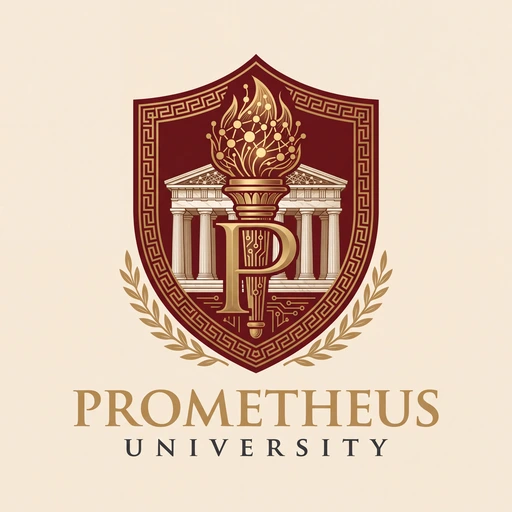
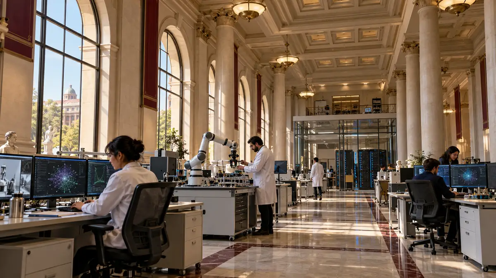

DOĞRUDAN REHBERDEN
İki dilli rehberi aç ↗Kaynak: 2026–2027 kurgusal üniversite rehberi. Metin aynen gösterilir; model yanıtı değildir.


Antik akademinin merakını, yapay zekânın olanaklarıyla buluşturuyoruz. Prom ile iki dilde keşfet, bilgiye kaynaklarıyla ulaş.
Prometheus, AI Engineering bitirme projesi için tasarlanmış kurgusal bir üniversite. Burada teknoloji, kaynaklara dayanan bir öğrenci deneyiminin parçası.
Kurgusal kurum rehberinden seçilen bilgiler
01–20EKİMBaşvuru birimi ve rehberdeki koşulları incele.
Ders sınırları, tarihler ve AKTS başına ücret.
Çalışma saatleri ve ödünç alma koşulları.
Prom; kurum rehberi, ders verileri ve hesaplama araçlarını iki dilli bir asistan deneyiminde bir araya getiren araştırma projemiz.
Prom ile konuş ↗Gerçek Prom modeli · Geçici Colab demosu. Oturum kapandığında bağlantı durabilir.Rehber ve araçları burada keşfet. Bu etkileşimli vitrin, eğitilmiş modelin yanıtlarını üretmez.
| Kod | Ders | ECTS | Gün / Saat | Derslik |
|---|
Dersler CSV paketinden gelir. Filtreleme tarayıcıda yapılır.
Ders notlarını ve AKTS değerlerini ekle. Sonuç yalnızca girdiğin dersler içindir; resmî GNO değildir.
Prom modeli geçici Colab demosuyla bağlı. Sohbet panelinden üç modu deneyebilirsin.
Son yüklenen Colab defterinin ölçümleri. Gelişim alanlarını da görünür kılan bir araştırma süreci.
30 soru · Türkçe 0,73 · İngilizce 0,83
17 Ekim: 23,5 / 30 puan. Arama ve ajan kodu düzeltmeleri sonrası; Gemini hakem değerlendirmesi. CPU’da yalnızca üç örnek denendi.Devamsızlık, kayıt dondurma ve kitap gecikmesi yanıtlarında hatalar sürüyor. Dil tutarlılığı ve eksik cevaplar gelişime açık. Ortalama hesabında kurallı araç yönlendirmesi kullanılır; 0,78 puanı modelin tek başına başarısı değildir.
Prometheus'un yapay zekâ tesisleri için tasarlanan konsept: robotik, makine öğrenmesi ve hesaplama altyapısını aynı araştırma ortamında buluşturuyor.

Kimlik ve araç protokolü
İki dilli kurum rehberi
Dersler, hesap ve ortalama
Model demosu ve CPU yayın hattı
Bu sayfa, AI Engineering bitirme projesinin etkileşimli vitrinidir. Gerçek kayıt, burs başvurusu veya resmî öğrenci işlemi yapmaz.
Proje paketini indir ↓